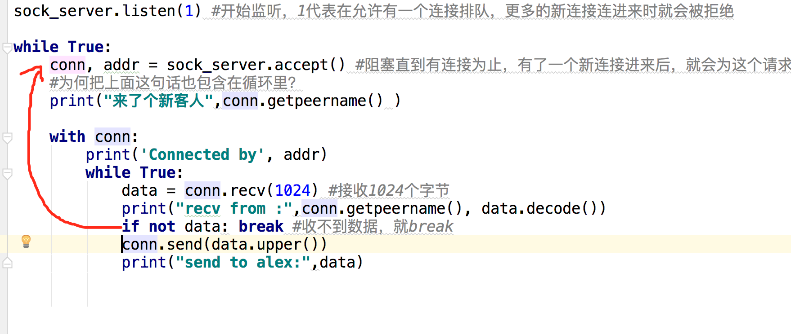

本节重点：
- 使学生掌握基本的socket tcp / udp 通信实例
- 让学生可通过socket写一个简单的聊天的例子
本节时长需控制在70-80分钟内
基本Socket例子(10-15分钟)
做了这么久的铺垫，是时候该与远方的她say hi啦
Server
# Echo server program
import socket
HOST = '' # Symbolic name meaning all available interfaces
PORT = 50007 # Arbitrary non-privileged port
sock_server = socket.socket(socket.AF_INET, socket.SOCK_STREAM)
sock_server.bind((HOST, PORT))
sock_server.listen(1) #开始监听，1代表在允许有一个连接排队，更多的新连接连进来时就会被拒绝
conn, addr = sock_server.accept() #阻塞直到有连接为止，有了一个新连接进来后，就会为这个请求生成一个连接对象
with conn:
print('Connected by', addr)
while True:
data = conn.recv(1024) #接收1024个字节
if not data: break #收不到数据，就break
conn.sendall(data) #把收到的数据再全部返回给客户端
Client
# Echo client program
import socket
HOST = 'localhost' # The remote host
PORT = 50007 # The same port as used by the server
client = socket.socket(socket.AF_INET, socket.SOCK_STREAM)
client.connect((HOST, PORT))
client.sendall(b'Hello, world')
data = client.recv(1024)
print('Received',data)
先启动server端，再启动client端，看结果

此时一定要停下来，让学生自己写一遍！
循环收发数据(15-20分钟)
第一次接触就这么交待了，只说了一句话，感觉不够过瘾，如何实现更多的交互呢？简单，只需要让客户端不断的发，服务端不断的收就可以了，写个循环搞定
server
# Echo server program
import socket
HOST = '' # Symbolic name meaning all available interfaces
PORT = 50007 # Arbitrary non-privileged port
sock_server = socket.socket(socket.AF_INET, socket.SOCK_STREAM)
sock_server.bind((HOST, PORT))
sock_server.listen(1) #开始监听，1代表在允许有一个连接排队，更多的新连接连进来时就会被拒绝
conn, addr = sock_server.accept() #阻塞直到有连接为止，有了一个新连接进来后，就会为这个请求生成一个连接对象
with conn:
print('Connected by', addr)
while True:
data = conn.recv(1024) #接收1024个字节
print("server recv:",conn.getpeername(), data.decode())
if not data: break #收不到数据，就break
conn.sendall(data) #把收到的数据再全部返回给客户端
client
# Echo client program
import socket
HOST = 'localhost' # The remote host
PORT = 50007 # The same port as used by the server
client = socket.socket(socket.AF_INET, socket.SOCK_STREAM)
client.connect((HOST, PORT))
while True:
msg = input(">>>:").strip()
if len(msg) == 0:continue
client.sendall(msg.encode()) #发送用户输入的数据,必须是bytes模式
data = client.recv(1024)
print('Received',data.decode()) #收到服务器的响应后，decode一下
结果
此时一定要停下来，让学生自己写一遍！
简单聊天软件(5分钟)
为什么上面的那个例子里，我跟杠娘说什么，她就回复什么，这哪叫聊天呀，这种事需要双方尽全力配合才行呀，那就让服务端也能说话
Server
import socket
HOST = '' # Symbolic name meaning all available interfaces
PORT = 50007 # Arbitrary non-privileged port
sock_server = socket.socket(socket.AF_INET, socket.SOCK_STREAM)
sock_server.bind((HOST, PORT))
sock_server.listen(1) #开始监听，1代表在允许有一个连接排队，更多的新连接连进来时就会被拒绝
conn, addr = sock_server.accept() #阻塞直到有连接为止，有了一个新连接进来后，就会为这个请求生成一个连接对象
with conn:
print('Connected by', addr)
while True:
data = conn.recv(1024) #接收1024个字节
print("recv from Alex:",conn.getpeername(), data.decode())
if not data: break #收不到数据，就break
response = input(">>>").strip()
conn.send(response.encode())
print("send to alex:",response)
client不需要做更改，直接 看结果

冷静的海峰玩了一会这个程序说，Alex你这个有bug,双方只能一来一往的说话，如果你想连续发2句话是不行的，就卡住了。
对，海峰你说的没错，之所以连续发第2次时会卡住 ，是因为你发了一条消息后，就去调用recv方法接收服务器的响应了，在服务器端返回消息之前，这个recv(1024)方法是阻塞的，如果想允许此时还能再发消息给服务器端，就需要再单独启动一个线程，只负责发消息。当然这就得等我们掌握了线程知识再学啦，此处不多赘述。
此处补充下listen(1)的演示，就是启动多个客户端连接同一个服务端，发现服务端只能同时处理一个请求
聊天软件升级版(20-25分钟)
刚才在聊天的时候，你会发现，服务端(杠娘)在服务客户端(Alex)的时候，其它人如果也想跟杠娘连接是处于排队状态，然后等Alex完事并断开后，下一个人就跟上，但实际情况是客户端一断开，服务端也跟着断了。
为什么会断呢？因为服务端以下代码的意思是， 如果收不到数据，就跳出循环，就断开了呀
conn, addr = sock_server.accept() #阻塞直到有连接为止，有了一个新连接进来后，就会为这个请求生成一个连接对象
with conn:
print('Connected by', addr)
while True:
data = conn.recv(1024) #接收1024个字节
print("recv from Alex:",conn.getpeername(), data.decode())
if not data: break #收不到数据，就break ， 就是它干的
response = input(">>>").strip()
conn.send(response.encode())
print("send to alex:",response)
想实现一个客户端断开后，可以立刻接入另外一个客户端的话，怎么办呢？只需再在外层加个循环
while True: #最外层loop
conn, addr = sock_server.accept() #阻塞直到有连接为止，有了一个新连接进来后，就会为这个请求生成一个连接对象
#为何把上面这句话也包含在循环里？
print("来了个新客人",conn.getpeername() )
with conn:
print('Connected by', addr)
while True:
data = conn.recv(1024) #接收1024个字节
print("recv from :",conn.getpeername(), data.decode())
if not data: break #收不到数据，就break
conn.send(data.upper())
print("send to alex:",data)
break跳出后就回到大while那层
此时一定要停下来，让学生自己写一遍！
问题：
有的同学在重启服务端时可能会遇到

这个是由于你的服务端仍然存在四次挥手的time_wait状态在占用地址（如果不懂，请深入研究1.tcp三次握手，四次挥手 2.syn洪水攻击 3.服务器高并发情况下会有大量的time_wait状态的优化方法）
解决方法1：
sock_server = socket.socket(socket.AF_INET, socket.SOCK_STREAM)
sock_server.setsockopt(socket.SOL_SOCKET,socket.SO_REUSEADDR,1) #一行代码搞定，写在bind之前
sock_server.bind((HOST, PORT))
解决方法2：
发现系统存在大量TIME_WAIT状态的连接，通过调整linux内核参数解决，
vi /etc/sysctl.conf
编辑文件，加入以下内容：
net.ipv4.tcp_syncookies = 1
net.ipv4.tcp_tw_reuse = 1
net.ipv4.tcp_tw_recycle = 1
net.ipv4.tcp_fin_timeout = 30
然后执行 /sbin/sysctl -p 让参数生效。
net.ipv4.tcp_syncookies = 1 表示开启SYN Cookies。当出现SYN等待队列溢出时，启用cookies来处理，可防范少量SYN攻击，默认为0，表示关闭；
net.ipv4.tcp_tw_reuse = 1 表示开启重用。允许将TIME-WAIT sockets重新用于新的TCP连接，默认为0，表示关闭；
net.ipv4.tcp_tw_recycle = 1 表示开启TCP连接中TIME-WAIT sockets的快速回收，默认为0，表示关闭。
net.ipv4.tcp_fin_timeout 修改系統默认的 TIMEOUT 时间
此方法全栈班的学生可直接忽略
UDP实例(15-20分钟)
udp 不需要经过3次握手和4次挥手，不需要提前建立连接，直接发数据就行。
server端
import socket
ip_port=('127.0.0.1',9000)
BUFSIZE=1024
udp_server_client=socket.socket(socket.AF_INET,socket.SOCK_DGRAM) #udp类型
udp_server_client.bind(ip_port)
while True:
msg,addr=udp_server_client.recvfrom(BUFSIZE)
print("recv ",msg,addr)
udp_server_client.sendto(msg.upper(),addr)
client端
import socket
ip_port = ('127.0.0.1',9000)
BUFSIZE = 1024
udp_server_client = socket.socket(socket.AF_INET,socket.SOCK_DGRAM)
while True:
msg=input('>>: ').strip()
if not msg:continue
udp_server_client.sendto(msg.encode('utf-8'),ip_port)
back_msg,addr = udp_server_client.recvfrom(BUFSIZE)
print(back_msg.decode('utf-8'),addr)
演示
此时一定要停下来，让学生自己写一遍！
TCP VS UDP(5分钟)
tcp基于链接通信
- 基于链接，则需要listen（backlog），指定连接池的大小
- 基于链接，必须先运行的服务端，然后客户端发起链接请求
- 对于mac系统：如果一端断开了链接，那另外一端的链接也跟着完蛋recv将不会阻塞，收到的是空(解决方法是：服务端在收消息后加上if判断，空消息就break掉通信循环)
- 对于windows/linux系统：如果一端断开了链接，那另外一端的链接也跟着完蛋recv将不会阻塞，收到的是空(解决方法是：服务端通信循环内加异常处理，捕捉到异常后就break掉通讯循环)
udp无链接
- 无链接，因而无需listen（backlog），更加没有什么连接池之说了
- 无链接，udp的sendinto不用管是否有一个正在运行的服务端，可以己端一个劲的发消息，只不过数据丢失
- recvfrom收的数据小于sendinto发送的数据时，在mac和linux系统上数据直接丢失，在windows系统上发送的比接收的大直接报错
- 只有sendinto发送数据没有recvfrom收数据，数据丢失